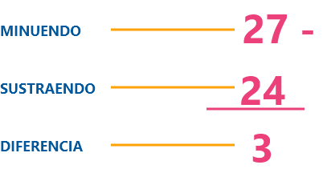
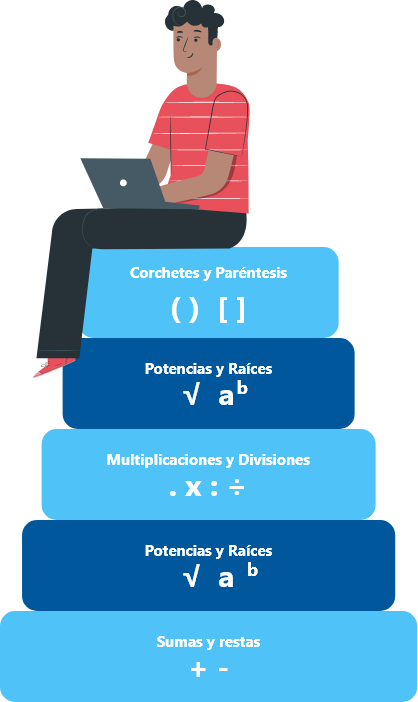

1. Introducción
Los números naturales surgieron de la necesidad del ser humano de negociar y ordenar cosas, el hombre tuvo la necesidad de representar las cantidades de lo que tenía para saber con qué contaba exactamente. De ahí surgió la necesidad de crear símbolos que representaran esas cantidades.
A partir de esta necesidad el hombre crea lo que hoy conocemos como números naturales. Estos son los primeros que surgen en las distintas civilizaciones debido a que contar y ordenar elementos son las tareas más elementales en el tratamiento de las cantidades.
1. Conjuntos numéricos
Bienvenidos
El desarrollo de la humanidad se ha dado a partir de las dificultades o necesidades que se presentan a lo largo de la historia, por ejemplo, el hombre primitivo sintió hambre entonces tuvo la necesidad de buscar comida fuese cazándola, colectándola o cultivándola; sintió frío entonces desarrolló el fuego y encontró la manera de cubrirse con pieles de animales.
Así mismo pasó con el desarrollo de las matemáticas, más específicamente con el surgimiento de los números y los conjuntos numéricos que eran utilizados para contar, hacer cálculos, resolver problemas, y demás actividades que requerían de la implementación del uso de las matemáticas.
En este espacio, nos ocuparemos en el estudio de los conjuntos numéricos: ¿qué son? ¿para qué sirven? ¿cómo se aplican?, conceptos que nos ayudarán a entender la naturaleza de los números y poder comprender el desarrollo de los temas posteriores de este curso.
Para el SENA es importante el desarrollo de las competencias en el ámbito educativo, laboral y personal.
1.1 Números naturales
Daremos inicio con el conjunto de los números naturales que se denotan con la letra (N).
N = { 1, 2, 3, 4, 5, 6, 7,.......}
El conjunto de los números naturales surgió de la necesidad de contar, lo cual se manifiesta en el ser humano desde sus inicios.
Este conjunto se caracteriza porque:

Tiene un número infinito de elementos.
Cada elemento tiene un sucesor y todos, excepto el 1, un antecesor.
El sucesor de un número natural, se obtiene sumando uno (+1); el antecesor se obtiene restando uno (-1).
Representación en la recta numérica de los naturales
Números Naturales
3 + 1 = 4
Utilizados para labores de conteo de objetos. Lo constituyen los enteros positivos (1, 2, 3, 4, 5, 6, …)
2. Aspectos ambientales
La oferta de los recursos naturales que hasta hace algunos años parecía inagotable, hoy en día ha disminuido debido al aprovechamiento irracional de estos, trayendo consigo la contaminación del aire, suelo, agua, disminución o extinción de la flora y fauna, todas estas problemáticas son consecuencia de las acciones humanas que afectan considerablemente los ecosistemas.
Colombia es uno de los países con mayor biodiversidad biológica en el mundo y la mayoría de las áreas donde se concentran las riquezas de estos recursos naturales son territorio de comunidades étnicas. Henao (2012) define el territorio desde la perspectiva de grupo étnicos como “la unidad de atributos culturales, biológicos, sociales, políticos, que garantiza su pervivencia, donde se vive y se proyecta su presente y su futuro” (p.10). De cierta manera cualquier acción de intervención que involucre la relación entre la comunidad étnica y el medio ambiente debe estar enfocada hacia la preservación de los recursos, la cultura y costumbres.
Conservar y proteger la biodiversidad y la identidad cultural de los pueblos étnicos es un compromiso social y ambiental que está ligado a la preservación de todos los recursos del medio ambiente incluyendo al ser humano, cualquier actividad que afecte el equilibrio biológico pone en riesgo no solo la especie afectada sino la salud de toda una comunidad. Con el fin de preservar esos territorios étnicos diversos, se deben tomar acciones para mitigar los efectos adversos generados por las actividades domésticas, productivas, culturales y económicas que desarrollan los grupos étnicos en sus territorios.
2.1 Factores ambientales
El ser humano siempre ha necesitado del medio ambiente para desarrollarse como individuo, estas interrelaciones pueden generar modificaciones que provocan problemáticas generalmente a mediano y largo plazo difícil de valorar y que alteran la dinámica y equilibrio de los ecosistemas. La contaminación que el hombre produce en estos ecosistemas también afecta al ser humano en la medida que disminuye la oferta y la calidad de los recursos, impactando directamente el estado de salud.
Actualmente el término biodiversidad ha generado interés económico por el uso de los recursos naturales en la fabricación de medicamentos, alimentos, cosméticos y otras actividades extractivas, consecuencia de estas explotaciones se han desaparecido muchos recursos valiosos de los territorios y se ha generado conflictos por el dominio de estas tierras.
Algunas de las causas directas en la pérdida de biodiversidad generadas por el ser humano son:
El impacto ambiental de las actividades humanas provoca la contaminación de los factores ambientales para la supervivencia de las especies en un ecosistema.
Son considerados factores ambientales:
La calidad y conservación de todos los factores ambientales es directamente proporcional al impacto generado en las interrelaciones entre sí. La mínima alteración en el entorno socio ambiental puede presentar impactos como la presencia de polvo, ruido, malos olores, insalubridad, generación de residuos tóxicos, los cuales afectan a las comunidades que los provocan o las que habitan en el área de influencias generando alteraciones en la salud y enfermedades a largo plazo.
Los impactos ambientales no solo lo generan las actividades cotidianas y los habitantes de una comunidad. La mayoría de estos impactos están asociados a los grandes proyectos que llegan a estas zonas afectando todo el entorno, es por esto que se requiere de la elaboración de una línea base para determinar el estado en el que se encuentran los recursos y ejercer control de todas las acciones antes, durante y después del proceso de intervención.
2.2 Evaluación del impacto ambiental
Protección de la calidad ambiental y calidad de vida humana
El medio ambiente le brinda al ser humano múltiples servicios de gran importancia para el crecimiento económico y social. La naturaleza aporta elementos y fuentes de energía que se hacen indispensables para la subsistencia; pero en contraste esta recibe sus vertimientos contaminantes resultantes de los diferentes modos de producción e interacción del hombre y medio, considerados importantes para el bienestar humano y distintas formas de vida.
El nivel de vulnerabilidad ambiental se asocia al modelo de desarrollo, disponibilidad y fragilidad de los medios de subsistencia, la sobrepoblación, la cultura y la organización social de una comunidad, generando acciones favorables o adversas al medio ambiente o algunos de sus componentes provocados en la ejecución de actividades de aprovechamiento del espacio o del recurso ambiental.
La fragilidad medioambiental tiene en cuenta varios factores, por ejemplo:
Otro ejemplo son las amenazas naturales, socio naturales o antrópicas como la sensibilidad o debilidad de los elementos anteriormente expuestos.
Una vez tomada la decisión de avanzar en cualquier proyecto que representa alguna afectación al medio, se debe realizar una Evaluación de Impacto Ambiental simple (EIA), acorde con el procedimiento administrativo legalmente establecido.
La Evaluación del Impacto Ambiental es la herramienta para gestionar la protección del medio ambiente y valorar los impactos ambientales, identificando la relación de causa-efecto que influyen sobre el medio ambiente, la salud humana y el ecosistema producto de las actividades humanas, con el fin de predecir, valorar, interpretar y prevenir. Esta evaluación facilita la toma de decisiones y gestiona la protección del medio ambiente con las comunidades en los proyectos, planes o programas que se desarrollen en sus territorios.
La participación de la comunidad étnica en la evaluación de impacto ambiental es fundamental, son ellos los que ejercen las acciones al medio ambiente generando cambios positivos o negativos que pongan en peligro la biodiversidad del entorno, es por esto que de acuerdo a la inclusión de las comunidades étnicas se destaca que los proyectos que requieran licencia ambiental por parte de alguna autoridad como ANLA, CAR, CDS, deben contar con un certificado expedido por el Ministerio del Interior en cuanto a Consulta Previa, de acuerdo a la normatividad vigente.
La evaluación del impacto ambiental también permite identificar la vulnerabilidad en la que se encuentra el estado de salud de una población, facilitando de esta manera el diagnóstico de factores y la toma de decisiones para mitigar o corregir esta situación.
2.3 Normatividad aplicada al medio ambiente
En el siguiente listado, se realiza la compilación de la normatividad ambiental aplicable para Colombia.
1974
Decreto 2811
Código nacional de los recursos naturales renovables y de protección del medio ambiente.
Por el cual se dicta el Código Nacional de Recursos Naturales Renovables y de Protección al Medio Ambiente.
1978
Decreto 1681
Sobre los recursos hidrobiológicos. Para asegurar la conservación, el fomento y el aprovechamiento de los recursos hidrobiológicos y del medio acuático.
1979
Ley 09
Código sanitario, su objeto principal responde a la conservación de la salud y el bienestar humano.
1990
Ley 30
Por medio de la cual se aprueba el Convenio de Viena para la Protección de la Capa de Ozono. Viena, 22 de marzo de 1985.
1991
Constitución Política de Colombia
Art 49. Atención de la salud y saneamiento ambiental.
Art 58. Función ecológica de la propiedad privada.
Art 99. Establece la obligatoriedad de tramitar el respectivo permiso de explotación de material de arrastre.
Arts. 77-78. Clasificación de aguas.
Arts. 86 -89. Derecho a uso del agua.
Art 95. Protección de los recursos culturales y naturales del país.
1992
Lay 29
Por medio de la cual se aprueba el "Protocolo de Montreal relativo a las sustancias agotadoras de la capa de ozono".
1993
Lay 99
Mediante el cual se crea el Ministerio de Ambiente y se organiza la administración de los recursos naturales a nivel regional. Se crean o redefinen las funciones de las Corporaciones Autónomas Regionales.
1995
Decreto 2107
Por medio del cual se modifica parcialmente el decreto 948 de 1995 que contiene el reglamento de Protección y control de la calidad del aire.
Documento CONPES 1750
Establece las políticas de manejo de las aguas.
1996
Decreto 605 de 1996
Reglamenta los procedimientos de potabilización y suministro de agua para consumo humano.
2001
2015
Decreto 2015
Por medio del cual se expide el Decreto Único Reglamentario del Sector Ambiente y Desarrollo Sostenible.
2017
Resolución 2254
Por la cual se adopta la norma de calidad del aire ambiente y se dictan otras disposiciones.
3. Caracterización
Conocer el contexto socio ambiental de la comunidad étnica de manera integral. En Colombia la diversidad étnica hace referencia al reconocimiento y existencia de tres grupos étnicos: comunidades negras, afrocolombianas, raizales y palenqueras- NARP, pueblos indígenas y el pueblo rom o gitano. Con el fin de preservar la identidad étnica del país se busca implementar acciones que permitan la inclusión con enfoque diferencial étnico en las diversas intervenciones que se desarrollen en sus territorios, promoviendo la participación armónica en las decisiones que afecten su vida social, cultural, económica, ambiental productiva y política. Se hace necesario que los actores involucrados o que intervienen con las comunidades étnicas desarrollen un estudio descriptivo donde se recolecta información cualitativa y cuantitativa con el objeto de conocer la organización de la comunidad étnica, su cosmovisión y modo de vivir.
El estudio inicial de la comunidad étnica se define como caracterización, donde se aplican instrumentos y técnicas que permitan reconocer el entorno, analizar la dinámica social, identificar las prácticas productivas y culturales de un territorio, creando una relación colaborativa entre la comunidad y los actores con una mirada integral del espacio.
La caracterización de una comunidad se puede llevar a cabo de diferentes contextos, se puede realizar dependiendo del punto de interés de la intervención con que se vaya a trabajar, abarcando aspectos económicos, productivos, políticos, organizacionales, ambientales o sociales.
3.1 Caracterización socio ambiental de comunidades étnicas
El concepto socio ambiental está relacionado con una visión integral entre aspectos ambientales y sociales de las comunidades étnicas, a través de la descripción de las dinámicas del territorio para conocer el estado del uso o vulnerabilidad en el que se encuentran la oferta ambiental en relación con el grado de interacción social del grupo étnico.
| Ámbito de lo social |
| Presencia de grupo humanos. (demografía) Relaciones entre grupos humanos. (política, económica) Forma de vida de los grupos humanos. (condiciones de vida) Valores, actitudes y comportamientos de los grupos humanos. (cultura) |
| Ámbito de intersección entre lo social y lo ambiental |
| Acción del ser humano sobre el medio ambiente e incidencia de este sobre el ámbito social. |
| Ámbito de lo ambiental |
| Medio natural Aire Agua Suelo Flora Fauna Subsuelo Medio transformado Rural Urbano |
La relación que existe entre los elementos del ámbito social, ambiental y las formas de presión que ejercen las comunidades sobre el medio ambiente (consumo de recursos, disposición de desechos) definen el estado en el que se encuentra el entorno socio ambiental de una comunidad.
La caracterización permite la recolección, procesamiento, análisis y difusión de la información recolectada, los resultados recogidos facilitan la toma de decisiones y la planificación de acciones que contribuyan con el mejoramiento de las condiciones socio ambientales encontradas. Se cuenta con una serie de técnicas e instrumentos que se emplean en los diferentes momentos permitiendo la determinación de los principales factores socio ambientales de la comunidad étnica.
3.2 Técnicas e instrumentos para la caracterización
Toda persona que inicia la intervención con las comunidades étnicas deben prepararse de la mejor manera a través de la consulta de diferentes fuentes, sin embargo, para complementar el conocimiento es necesario realizar visitas a los lugares donde habitan los grupos étnicos donde se interactúe directamente con ellos, logrando observar las condiciones de vida reales permitiendo recopilar información verídica y real.
Los resultados que proporciona la aplicación de las técnicas o instrumentos en la caracterización, son de gran utilidad como fuente secundaria de consulta para otros actores que se involucren a futuro con la comunidad.


3.3 Análisis de información de la caracterización
Una vez recolectada la información a través de las técnicas e instrumentos seleccionados y aplicados, se interpreta la información obtenida y se analiza para facilitar la toma de decisiones y proyectar acciones correspondientes.
El análisis de la información se puede llevar a cabo de manera cualitativa o cuantitativa según la metodología seleccionada.
El análisis cuantitativo
Implica el uso de valores numéricos a través de variables e indicadores que permita obtener información sobre el estado de la relación del medio ambiente y sociedad, se emplea en el caso que se quiere obtener datos estadísticos de la comunidad étnica, permitiendo medir elementos que influyan en la dinámica comportamental de los individuos.
Ejemplo: ¿cuántas familias hacen uso del río para las actividades agrícolas? ¿Cuántas personas no tienen acceso al alcantarillado?
Las ventajas de este método son la objetividad y neutralidad en el análisis de la información, se obtienen resultados representativos, los datos estadísticos respaldan lo observado y vivenciado en la comunidad, y se obtienen datos confiables que facilita la toma de decisiones.
El análisis cualitativo
Busca proyectar conclusiones a través de la interpretación del equipo de trabajo que haya realizado la caracterización, comprendiendo las lógicas de pensamiento que guían las acciones sociales comprendiendo la cultura y cosmovisión. Este análisis se enfoca en los aspectos vivenciales y de interacción con la comunidad étnica teniendo en cuenta evitar involucrarse y emitir juicios que incluyan y desvíen el objetivo de la investigación.
Estos métodos de análisis se complementan a tal manera que el cuantitativo respalda y soporta el análisis cualitativo otorgando al informe de caracterización de la comunidad étnica veracidad, confiabilidad y calidad.
La información recolectada se documenta y se estructura a través de un informe en el cual se describe todos los aspectos geográficos, demográficos, organizacionales, culturales, ambientales, productivos y económicos.
Analizados, en el marco del ámbito social y ambiental en concordancia con las formas de presión que ejercen las comunidades étnicas sobre el medio ambiente (consumo de recursos, disposición de desechos).
Herramientas como matrices, diagramas, mapas, gráficas, tablas facilitan la descripción e interpretación de la información.
Glosario
Caracterización territorial:información económica, social, cultural entre otras, de un espacio o lugar de la geografía.
Concesión:acción que se requiere cuando se hace uso continuo del recurso, su utilización es con fines comerciales.
Consejo comunitario:se denomina a la institucionalidad de las comunidades con ascendencia afrocolombiana y que cuentan con una cultura propia, además de compartir una historia, tradiciones y costumbres, tienen persona jurídica y dentro de sus funciones están la de ejercer autoridad interna dentro de las tierras de las comunidades, de acuerdo con los mandatos constitucionales.
Contexto:se define por las dimensiones espaciales y temporales. En un sentido de referencia contiene información necesaria para comprender el sentido y significado de acciones, enunciados, normas etc., de un conjunto de sujetos.
Entorno:interacción activa de las personas con el medio que los rodea (espacio físico, biológico, ecosistema y comunidad), es un ambiente de construcción colectiva donde se identifica por tener un espacio físico definido, grupo de personas con roles y una estructura organización.
Permiso:solicitud que se requiere cuando corresponde a un uso continuado del recurso y es de consumo doméstico.
Resguardo indígena:institución legal y sociopolítica de carácter especial, conformada por una comunidad o una parcialidad indígena, con un título de propiedad comunitario.
Material complementario
| Nombre del documento o material | Tipo de material | Enlace del recurso |
|---|---|---|
| Departamento Nacional de Planeación. 2010. Aspectos básicos grupo étnico indígenas. Dirección de desarrollo territorial sostenible. | Ver | |
| Departamento Nacional de Planeación-DNP. (2010). Pueblo Rom-Gitano-de Colombia. Haciendo camino al andar. Bogotá. DNP. | Ver | |
| GEILFUS, F. (2002). 80 Herramientas para el desarrollo participativo. Diagnóstico, planificación, monitoreo y evaluación. | Ver | |
| Sterimberg, E. G., Sánchez, C. Z., Forero, A. C., & J., J. C. (2004). Diseño de un sistema de indicadores socioambientales para el distrito capital de Bogotá. | Ver | |
| Ministerio del Interior. (2016). El enfoque diferencial y étnico en la política pública de víctimas del conflicto armado. | Ver | |
| USAID, OIM. (2016). Enfoque Étnico. | Ver | |
| USAID. (2016) Lineamientos para la implementación del enfoque de derechos y la atención diferencial a grupos étnicos. | Ver | |
| Van der hamm , Frieri, Navarrete y Zamora . (2012). Herramientas para la formación en contextos interculturales. | Ver |
Referencias bibliográficas
Agencia de los Estados Unidos para el Desarrollo Internacional-USAID. (2016). Lineamientos para la implementación del enfoque de derechos y la atención diferencial a grupos étnicos.https://pdf.usaid.gov/pdf_docs/PA00M7Q7.pdf
Geilfus, F. (2002). 80 Herramientas para el Desarrollo Participativo.http://repiica.iica.int/docs/B0850e/B0850e.pdf
Hammen, M. c., Sandra Frieri, M. P., & Zamora, N. C. (2012). Herramientas para la Formación en Contextos Interculturales.https://hdl.handle.net/11404/2633
Henao, C. I. (2012). Formación en gestión ambiental en grupos étnico. conceptos y principios.
Ministerio del interior República de Colombia. (s.f.). Cartilla El enfoque diferencial y Étnico en la política pública de víctimas del conflicto armado.https://gapv.mininterior.gov.co/sites/default/files/cartilla_enfoque_diferencial_fin_1.pdf
Ravanal, V. M. (2006). El enfoque Comunitario. Estudio de sus modelos de base.http://repositorio.uchile.cl/bitstream/handle/2250/122235/martinez-ravanal_el-enfoque-comunitario.pdf?sequence=1&isAllowed=y
Sterimberg, E. G., Sánchez, C. Z., Forero, A. C., & J., J. C. (2004). Diseño de un sistema de indicadores socioambientales para el distrito capital de Bogota.https://core.ac.uk/download/pdf/7082118.pdf